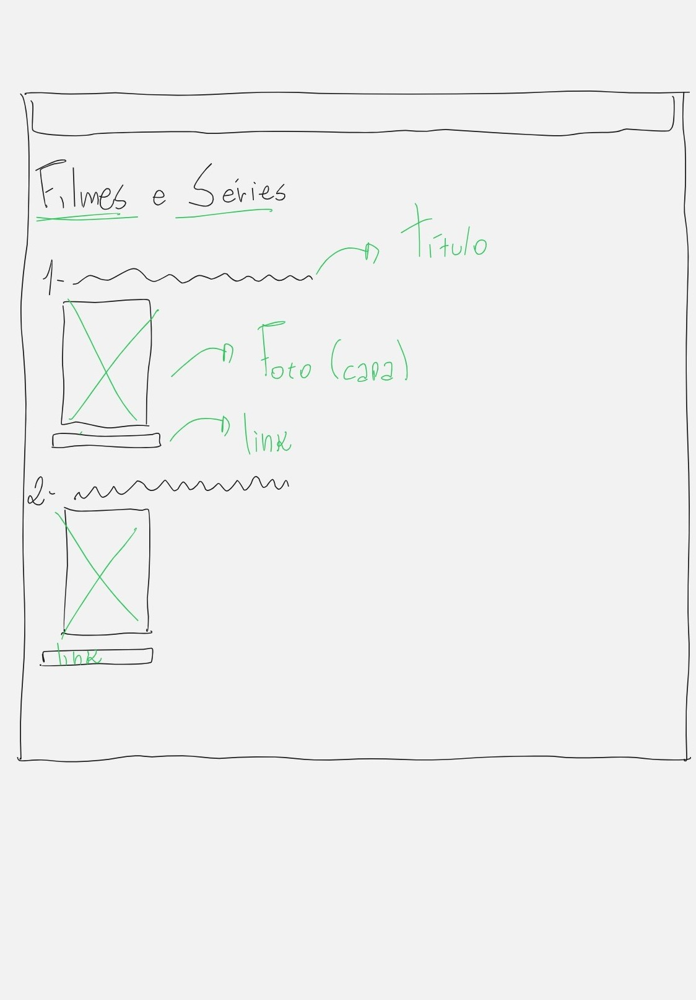
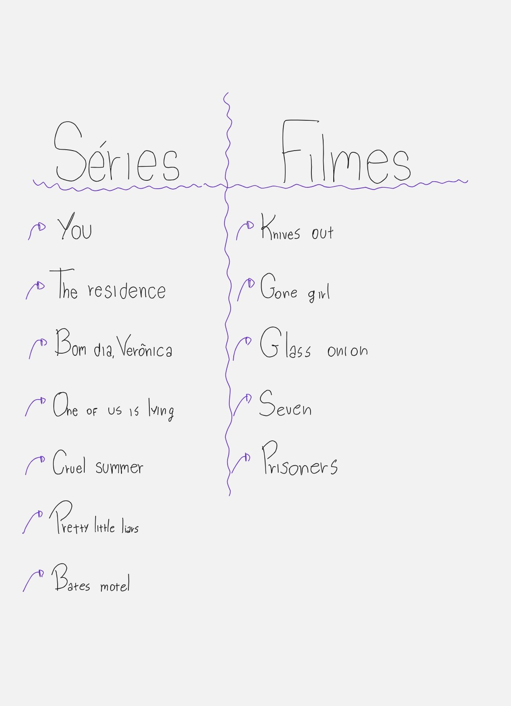

Guia de Filmes e Séries
Meu primeiro projeto prático no desenvolvimento web. Criado em um momento de experimentação, o objetivo inicial era puramente estrutural: aprender a organizar dados e construir listas orgânicas do zero utilizando HTML puro. Marca o início da minha jornada explorando a programação.
Contexto e Desenvolvimento
Objetivo e Propósito
Praticar os fundamentos de HTML, desenvolvendo uma estrutura de conteúdo semântica e organizada para uma página de recomendações de filmes e séries.
Desenvolvimento Técnico
O projeto foi desenvolvido utilizando HTML puro, explorando a criação de listas ordenadas, links, títulos e seções de conteúdo. O foco esteve na construção da estrutura e na organização hierárquica das informações, sem a utilização de recursos avançados de estilização.
Ver Projeto ao Vivo
Acesse o site publicado e explore o guia completo de filmes e séries que eu recomendo.
Acessar Projeto ao VivoProcesso e Estrutura
Abaixo estão os wireframes que guiaram a estrutura da página e a organização do conteúdo.

Organização de Conteúdo
Listas separadas por categoria (Séries e Filmes) para facilitar a navegação.

Estrutura da Página
Cada item possui título, imagem de capa e link para mais informações.